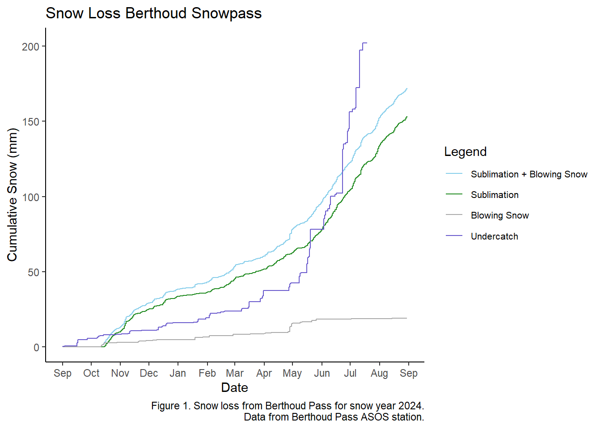
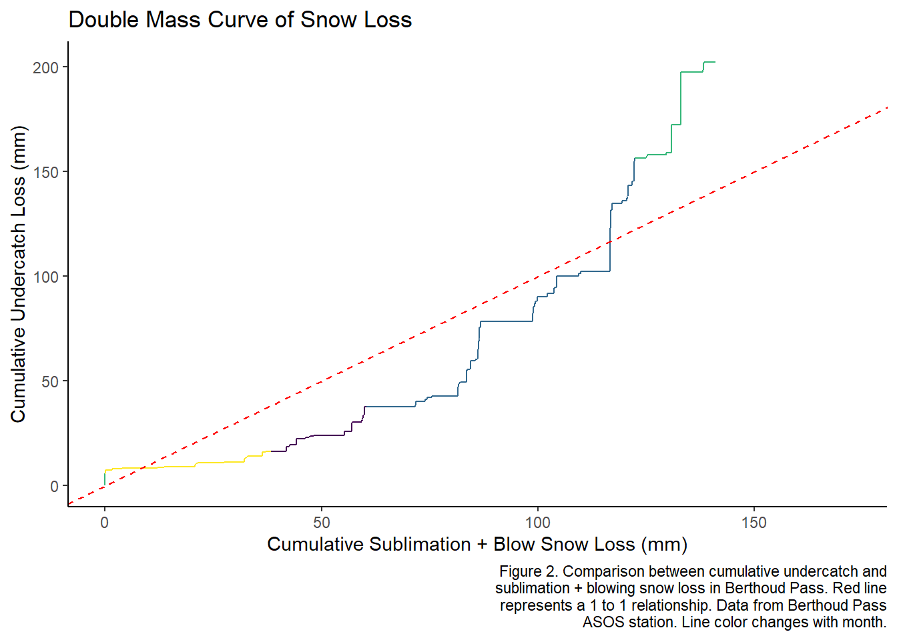

Chapter 6 Assignment 10 Sublimation
#Kate McGill
#Module 10 Sublimation
#12/3/2024
library(tidyverse)
library(patchwork)
ASOS <- read.csv("Data/asosclean_metamorphism.csv")
#generalized expression for sublimation
sublimation <- ASOS %>%
mutate(Date = as.Date(Date, format = "%m/%d/%Y"),
pr_mb = 33.8637526*.8279,
density_air = (.34722*pr_mb)/(tmpc + 273.15),
saturated_vp = 6.112*exp(17.62*tmpc/(243.12+tmpc)),
partial_vp = (saturated_vp * relh/100),
sublimation_rate = ifelse(depth.f.o > 0, -1*(density_air/pr_mb)*sms*(partial_vp - saturated_vp), 0),
cum_sublimation_loss = cumsum(replace_na(sublimation_rate, 0)),
cum_undercatch_loss = cum_undercatch_loss/10,
wind_threshold = 9.43 + 0.18 * tmpc + 0.0033 * (tmpc)^2,
snow_status = ifelse(tmpc <= 0 & p01mm > 0, "snow", "no_snow"),
movement = ifelse(snow_status == "snow" & gustms >= wind_threshold, "movement", "no_movement"),
total_transport = ifelse(snow_status == "snow",
ifelse(movement == "movement", 0.0000022 * (gustms)^4.04, 0),
0),
cum_total_transport = cumsum(replace_na(total_transport, 0)),
sublim_blowsnow = sublimation_rate + total_transport,
cum_subblow = cumsum(replace_na(sublim_blowsnow, 0))
) %>%
pivot_longer(cols = c("cum_undercatch_loss", "cum_sublimation_loss", "cum_total_transport", "cum_subblow"),
names_to = "cum", values_to = "cumsum")
wider <- sublimation %>%
pivot_wider(names_from = "cum", values_from = "cumsum") %>%
mutate(month = month(Date))
values <- c("cum_undercatch_loss" = "slateblue","cum_sublimation_loss" = "forestgreen",
"cum_total_transport" = "darkgrey", "cum_subblow" = "skyblue")
labels <- c("Sublimation + Blowing Snow", "Sublimation", "Blowing Snow", "Undercatch")
ggplot(sublimation)+
geom_line(aes(x = Date, y = cumsum, group = cum, color = cum))+
scale_color_manual(values = values,
labels = labels) +
scale_x_date(date_breaks = "1 months", date_labels = "%b")+
labs(
x = 'Date',
y = 'Cumulative Snow (mm)',
title = 'Snow Loss Berthoud Snowpass',
caption = str_wrap('Figure 1. Snow loss from Berthoud Pass for snow year 2024. Data from Berthoud Pass ASOS station.', width = 60),
colour = "Legend"
)+
theme_classic()+
theme(
legend.text = element_text(size = 8)
)## Warning: Removed 1005 rows containing missing values or values outside the scale range
## (`geom_line()`).
ggplot(wider)+
geom_line(aes(x = cum_subblow, y = cum_undercatch_loss, color = month))+
geom_abline(slope = 1, intercept = 0, linetype = "dashed", color = "red")+
scale_color_viridis_b()+
labs(
x = 'Cumulative Sublimation + Blow Snow Loss (mm)',
y = 'Cumulative Undercatch Loss (mm)',
title = 'Double Mass Curve of Snow Loss',
caption = str_wrap('Figure 2. Comparison between cumulative undercatch and sublimation + blowing snow loss in Berthoud Pass. Red line represents a 1 to 1 relationship. Data from Berthoud Pass ASOS station. Line color changes with month.', width = 60)
)+
theme_classic()+
theme(
legend.position = "none"
)## Warning: Removed 1005 rows containing missing values or values outside the scale range
## (`geom_line()`).